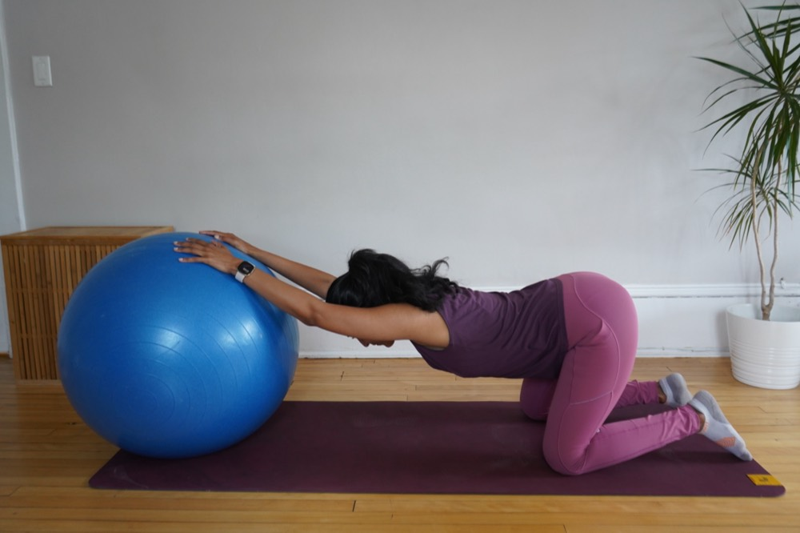

Primary service
Pelvic Health Physiotherapy
Individualized pelvic health physiotherapy for women, men and 2SLGBTQIA+ individuals. We believe great pelvic health care begins with feeling heard, understood and supported — in a safe, inclusive and welcoming environment where you can ask questions, explore your concerns and take an active role in your care.
Read more about pelvic health care
Our approach is integrated, individualized and collaborative. We combine clinical expertise, skilled hands-on treatment, movement and education to understand the interconnected factors contributing to your symptoms and help you move toward meaningful, lasting improvements in your pelvic health and well-being.
What sets our care apart
- Inclusive care: we welcome people of all ethnicities, gender identities, gender expressions and sexual orientations.
- Clinical experience: our pelvic health physiotherapists bring up to 19 years of clinical experience.
- Trauma-informed care: all our physiotherapists are trained in trauma-informed care, prioritizing choice, consent, clear communication and your sense of safety.
- Gender-affirming care: several team members have advanced training to support people navigating gender-affirming procedures and practices, including pelvic pain, post-operative vaginoplasty rehabilitation, sexual function and dysfunction, and binding, tucking and other gender-affirming practices.
- Comfort: our treatment rooms are private and beautiful.
An internal vaginal and/or anorectal assessment is only ever done when clinically appropriate, and it is always your choice: you may consent, defer or decline at any time.
How our pelvic health approach is integrative · Pelvic health conditions we treat · Gentle somatic education
Pessary fitting: see the Ottawa Pessary Clinic.